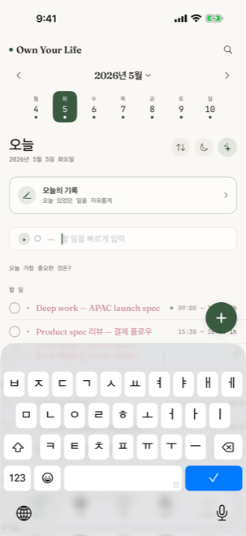
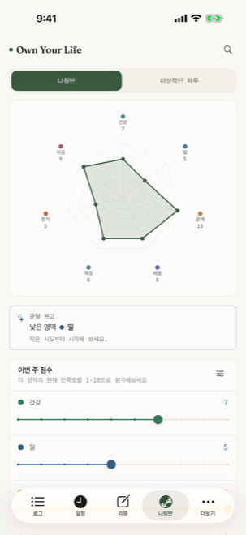
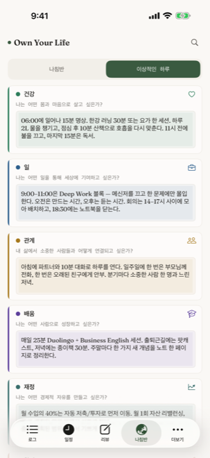
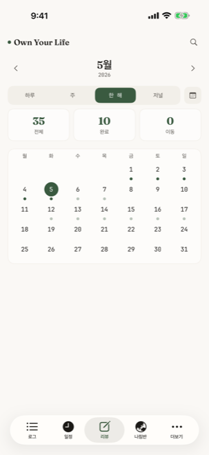

한국어
01 · 핵심
Daily Log — 하루를 적는 자리
"종이 저널의 의도성과 디지털의 속도, 그 사이의 균형."
OYL의 출발점이자 가장 자주 머무는 화면입니다. 하루를 기호 기반 빠른 기록으로
남길 수 있도록 설계되었습니다.
세 가지 기호로 모든 것을 분류합니다 — · (할 일), ○ (이벤트),
— (메모). 별도의 카테고리를 만들 필요도, 색깔을 정할 필요도 없습니다.
적는 행위 자체가 분류입니다.
- 빠른 입력 (QuickAdd): 화면 하단에 항상 떠있는 입력창. 한 줄 적고 엔터, 끝.
- 시간 자동 인식: "내일 3시 미팅"이라고 적으면 자동으로 시간 추출 + 일정 등록.
- 우선순위 색조: 높음/보통/낮음을 색의 농도로만 표현. 빨간 알람 없음.
- 미완료 자동 이월: 어제의 할 일이 자동으로 오늘로 옮겨집니다.
- 오늘의 저널: 한 문장으로 하루를 묶는 별도 공간.
- 10년 후 비전 카드 (NEW v2.1): 첫 3일 사용 후 부드럽게 등장하는 회고 질문.

화면 하단 QuickAdd 입력창
빠른 입력 (QuickAdd)
화면 어디에 있어도 한 줄로 기록할 수 있습니다. "회의록 정리", "오후 3시 카페에서 만남",
"한 주가 너무 빨랐다" — 한 입력창이 세 기호 모두를 받습니다.
스마트 시간 인식
한국어/영어로 작성된 시간 표현을 정규식으로 감지합니다. "내일 오후 3시", "tomorrow 3pm",
"9시 운동" 등 — 일정 블록을 자동 생성합니다.
스와이프 액션
왼쪽 스와이프 — 편집/삭제. 오른쪽으로 살짝 당기면 완료 처리. 길게 누르면 reorder.
자주 쓰는 동작이 손가락 근처에 있습니다.
02 · 핵심
Calendar — 24시간의 풍경
"시간은 자원이 아니라 거주 공간이다."
OYL의 캘린더는 단순한 일정 보기가 아닙니다. 24시간의 타임라인이
아침부터 밤까지 한 화면에 펼쳐지고, 그 위에 색으로 호흡하는 일정 블록이 놓입니다.
시간을 _블로킹(blocking)_한다는 개념을 디지털에서 가장 정성스럽게 구현한 형태입니다.
각 블록은 단순히 일정이 아니라, "내가 이 한 시간을 무엇에 쓸지 의도적으로 정한
선언"입니다.
- 탭 → 즉시 60분 이벤트 생성: 시간 위를 탭하면 그 시간 정시에 이벤트 시트가 열립니다.
- iOS 캘린더 통합: EventKit으로 시스템 캘린더 이벤트를 색다른 톤으로 오버레이.
- 월·주·일 네비게이션: 상단 스트립으로 빠르게 이동.
- 오늘 시간 표시: 빨간 가로선이 현재 시각을 표시.
- 이벤트 길이를 시각화: 30분 미팅과 2시간 딥워크가 크기로 구분됩니다.
- 색 = 한 가지 의도: 일정의 lifeArea(7개 축) 기반 색조 — 빨강/파랑 분류 X.
03 · 핵심
Habits — 작은 반복의 풍경
"연속 일수가 아니라 마디만 본다."
OYL은 습관을 스트릭(streak)으로 압박하지 않습니다. 빠진 날에 빨간 표시도,
"당신은 X일 연속을 깼습니다" 같은 알림도 없습니다. 대신 30일을 한 화면에 펼쳐
패턴을 보게 합니다.
- 30일 그리드: 한 달의 체크인을 하나의 풍경으로.
- 마일스톤 알림: 7일·90일·100일 — 압박이 아닌 작은 축하.
- "Streak"이 아닌 "Thread": 가장 길게 _이어지는 흐름_을 부드럽게 표시.
- 빠진 날 처리: 비어있는 칸은 그저 비어있을 뿐. 사과 강요 없음.
- LifeArea 연결: 각 습관이 어느 인생 축에 속하는지 자동 연결.
04 · 핵심
Compass — 일곱 개의 축
"방향이 완성보다 중요하다."
건강, 일, 관계, 마음, 배움, 즐거움, 의미 — 일곱 개의 LifeArea로
인생의 균형을 살펴봅니다. 각 축에 1~10점을 스스로 매기고, 매주 그 변화를 봅니다.
점수는 _경쟁_을 위한 것이 아닙니다. 다이아몬드 차트 위에 그려지는 자신의 모양이
지난 주와 어떻게 다른지를 _목격_하는 도구입니다. 김호 "방향이 완성보다 중요"의 시각화.
- 다이아몬드 차트: 일곱 개 축의 점수를 한눈에.
- 이상적 하루 (Ideal Day): 일곱 축이 균형 잡힌 하루의 시간 배분을 시각화.
- 주간 변화: 지난 주 대비 각 축의 Δ를 색으로 표시.
- Balance Index: 일곱 축의 표준편차로 계산되는 균형 지표.
- 맥락적 첫 진입 (NEW v2.1): 처음 Compass 탭을 열 때 부드러운 안내가 등장.

일곱 개 축의 다이아몬드

이상적 하루의 시간 배분
Ideal Day 시각화
"내가 이상적으로 살고 싶은 하루"의 시간을 일곱 축에 배분합니다. 실제로 산 하루와
비교하면, _무엇이 다른지_가 즉시 보입니다.
축은 _고정_, 의미는 _당신의 것_
일곱 개 축은 OYL이 정해놓은 그릇입니다. 그러나 "건강이 당신에게 무엇을 의미하는지"는
OYL이 결정하지 않습니다. 사용자의 정의가 그 그릇을 채웁니다.
05 · 핵심
Reviews — 네 가지 시간 단위의 회고
"회고하는 사람만이 자기 삶의 저자가 된다."
OYL의 회고는 네 가지 시간 단위로 분리되어 있습니다 —
일간 / 주간 / 분기 / 연간. 각 단위마다 _다른 질문_, _다른 깊이_, _다른 페이지_.
- 일간 회고: 잠들기 전 한 줄. "오늘, 가장 잘한 것은?" 또는 비어둠.
- 주간 회고: 일요일 30분의 의식. 지난 주의 7축 변화 + 다음 주의 의도 한 줄.
- 분기 회고: OKR의 정직한 점검. 강제된 점수 X — _느낌_으로 표시.
- 연간 내러티브 (Annual Letter): 한 해를 마무리하는 자리. 미래의 자신에게 보내는 편지.
- 1년 전 카드: "이날 1년 전에는 무엇을 했나요?" 회고를 _자동으로_ 받습니다.

연간 내러티브 — 한 해의 마무리
네 가지 단위의 _다른_ 깊이
일간은 한 줄, 주간은 한 단락, 분기는 한 페이지, 연간은 한 편의 편지.
깊이가 시간 단위에 _비례_합니다.
회고는 _선택_, 강요 X
회고를 못 한 주가 있어도 빨간 표시 없음. 다음 주에 다시 돌아오면 그 자리가
그대로 비어 있을 뿐. OYL은 _기록을 강요하지 않습니다_.
06 · 핵심
OKR — 목표를 일곱 축에 매핑
"목표는 완수의 대상이 아니라, 방향의 표지."
OYL의 OKR은 회사용 도구가 아닙니다. Google이 만든 OKR 프레임을
_개인의 삶에 맞춰 단순화_한 것입니다.
매 분기마다 1~3개의 Objective를 설정하고, 각 Objective에 1~3개의 Key Result를 둡니다.
각 Objective는 일곱 축 중 하나에 속하며, 자동으로 Compass의 균형 지표에 반영됩니다.
- 분기 단위 설정: 매 분기 시작에 OKR을 새로 정의.
- LifeArea 연결: 각 Objective는 일곱 축 중 하나에 명시적으로 매핑.
- 달성률 시각화: 진행 막대로 _현재 어디_인지를 한눈에.
- 분기 회고에 자동 통합: Reviews의 분기 단위에서 OKR이 자연스럽게 등장.
- 점수 X, 솔직함 O: 100% 달성보다 _정직한 평가_를 우선.
07 · 핵심
Future Log — 미래의 자신에게 보내는 기록
"먼 미래는 _지금_의 메모에서 시작된다."
지금 일정에 넣기엔 너무 멀지만 잊고 싶지 않은 것들이 있습니다 — "12월에 친구 결혼식",
"내년 봄 휴가 계획", "다음 분기에 시도해볼 새로운 운동". OYL의 Future Log는
월 단위로 묶이는 미래의 메모를 위한 자리입니다.
- 월 단위 묶음: 미래의 12개월을 한눈에 펼쳐 보여줍니다.
- 해당 월 진입 시 자동 promote: 12월이 되면 12월의 메모가 Daily Log로 옮겨집니다.
- 제한 없는 미래: 1년 뒤든 5년 뒤든 적을 수 있습니다.
08 · 보조
Collection — 영감의 결
"우연히 마주친 것들을 모아두는 보관함."
하루의 흐름과 별개로, 마음에 머무는 것들이 있습니다 — 카페에서 본 책 표지, 산책 중에
떠오른 문장, 누군가의 인용. Collection은 그런 _영감의 결_을 사진과 짧은 메모로 보관하는
자리입니다.
- 사진 + 메모 + 태그: 한 항목당 세 요소만.
- 로컬 저장 우선: 사진은 사용자의 기기와 iCloud에만 머뭅니다 — 서버 X.
- 태그 기반 탐색: "산책", "책", "음악" 등의 자유 태그.
- 시간순/태그순 두 가지 뷰: 한쪽은 흐름, 다른 쪽은 주제.
10 · 설정
Settings — 도구를 당신에게 맞춥니다
OYL은 설정으로 압도하지 않습니다. _필요한 것만_ 있고, 모두 한 화면에서 흐름으로 정리됩니다.
프로필 (NEW v2.1)
이름과 10년 후 비전을 언제든 편집. 온보딩에서 미루거나 비웠어도 여기서 다시 적을 수 있습니다.
스케줄
주의 시작 요일 (월/일), 하루의 시작 시각, 일과의 cut-off 시간.
기본값
새 todo의 기본 우선순위, 새 이벤트의 기본 길이 (15/30/60분).
표시 (Display)
언어 (7개), 라이트/다크, 폰트 사이즈, 색상 팔레트 선택.
iCloud 동기화
private container 동기화 ON/OFF. 데이터는 사용자의 iCloud에만 머뭅니다.
알림
일과 알림, 주간 회고 알림. 기본은 _침묵_ — 켜야만 울립니다.
데이터
JSON / Markdown 내보내기. iCloud 백업으로부터 복원. 모든 데이터 삭제 (Clear All).
데모 데이터
현실적인 1년 분량의 가상 데이터를 한 번에 로드. 처음 사용 시 화면을 채워보고 싶을 때.
11 · 약속
Forever Clause — 영원히 지킬 여섯 약속
"광고가 아니라, 제품의 뼈대다. 깨면 우리가 판 것이 더 이상 OYL이 아니다."
-
구독 없음 (No Subscription)
한 번 구매하면 끝입니다. 월/연 결제, 자동 갱신, 강제 업그레이드 — 영원히 도입하지 않습니다.
-
광고 없음 (No Ads)
앱 안에 광고가 _존재하지_ 않습니다. 외부 협찬도, 인앱 프로모션도, "이런 앱은 어떠세요"도 없습니다.
-
추적 없음 (No Tracking)
제3자 분석 SDK를 사용하지 않습니다. 사용자의 행동 데이터를 서버로 보내지 않습니다.
오직 _당신의 기기와 당신의 iCloud_에만 머뭅니다.
-
게임화 없음 (No Gamification)
연속 일수 강제, 배지, 리더보드, "당신을 응원합니다" 푸시 — 모두 _없음_. 삶은 점수로 측정되지 않습니다.
-
AI 판단 없음 (No AI Judgment)
"오늘 목표보다 뒤처지셨네요" 같은 AI 평가를 만들지 않습니다. AI가 _당신을 분석_하는 대신,
_당신이 쓴 것을 정돈_하는 데에만 사용합니다 (그것도 on-device).
-
기본은 빼는 것 (Subtraction by Default)
새 기능을 추가할 때마다 _하나를 비활성화_합니다. 도구가 무거워지지 않도록.
"혹시 모를 사용자"를 위해 기능을 더하지 않습니다.
이 여섯 약속을 마케팅 문구가 아니라 _제품의 뼈대_로 만들었습니다.
깨면 OYL이 OYL이 아니게 됩니다. 그래서 깨지 않습니다.
12 · 기술
기술 사양
- 플랫폼: iOS 17 이상 (iPhone, iPad)
- 언어: 한국어, English, 日本語, 中文(简体), Français, Español, Português (7개)
- 저장: SwiftData 로컬 + iCloud private container (선택적)
- 가격: 현재 무료 (사용자 의견 수집 단계, 추후 유료 전환 시에도 무료 다운로더는 모든 기능 유지)
- 인앱 결제: 없음. 모든 기능 잠금 해제.
- 구독: 영원히 도입하지 않음.
- 분석: 제3자 SDK 미사용. 크래시 리포트만 Apple 표준 채널.
- 오프라인: 인터넷 없이도 모든 기능 사용 가능.
- 접근성: VoiceOver, Dynamic Type, Reduce Motion 지원.
English
01 · Core
Daily Log — The place where the day is written
"The intention of paper journaling, at the speed of digital."
The starting point of OYL — and the screen you'll return to most. The Daily Log lets you capture the day
using symbol-based quick logging:
· (task), ○ (event), — (note).
No categories to create, no colors to choose. The act of writing is the categorization.
- QuickAdd: Persistent input at the screen bottom. One line, enter, done.
- Smart time parsing: Write "tomorrow 3pm meeting" and the time block is auto-created.
- Priority by color tone: High / Medium / Low expressed as ink density. No red alarms.
- Auto-rollover: Yesterday's unfinished tasks land in today automatically.
- Today's journal: A separate one-line space to bind the day.
- 10-year vision card (NEW v2.1): A gentle reflective question appears after Day 3 of use.
02 · Core
Calendar — A 24-hour landscape
"Time is not a resource. It is a place to inhabit."
OYL's calendar is not just a scheduler. A 24-hour timeline stretches from morning to
midnight on a single screen, and event blocks breathe over it in color. This is time blocking, rendered
with the deepest care possible in digital form.
- Tap to create: Tap an hour row, a 60-minute event sheet opens at the hour.
- iOS Calendar integration: EventKit overlays system events in a distinct tone.
- Month / week / day navigation: Top strip for quick movement.
- Now indicator: A red horizontal line marks the current time.
- Length is visual: A 30-minute meeting and a 2-hour deep work block are distinguished by size.
- Color = one intention: Event hue is derived from its LifeArea — not red/blue categories.
03 · Core
Habits — A landscape of small repetitions
"Not streaks. Threads."
OYL does not pressure habits with streaks. No red marks on skipped days. No "you broke
your 12-day streak" notifications. Instead, 30 days are laid out as a single landscape — so the
pattern becomes visible, not the failures.
- 30-day grid: A month's check-ins as a single landscape.
- Milestones, not pressure: 7-day, 90-day, 100-day — quiet celebrations.
- Threads, not streaks: Longest unbroken thread, gently displayed.
- Empty days stay empty: No guilt prompts. No apology demanded.
- LifeArea linkage: Each habit is connected to one of the seven axes.
04 · Core
Compass — Seven axes of balance
"Direction matters more than completion."
Health, Work, Relationships, Mind, Learning, Joy, Meaning — seven LifeAreas through which
you observe the balance of life. Rate each on a 1–10 scale; revisit weekly to see how the shape changes.
The score is not a competition. The diamond chart shows the shape of where you are this week vs. last —
a tool for witnessing, not for grading. The visualization of "direction over completion."
- Diamond chart: Seven axes at a glance.
- Ideal Day: Time allocation across the seven axes that would feel "balanced" to you.
- Weekly delta: Color-coded change vs. last week.
- Balance Index: Computed from the standard deviation across axes.
- Contextual intro (NEW v2.1): A gentle invitation appears the first time you visit Compass.
05 · Core
Reviews — Four time-scales of reflection
"Only those who review become authors of their lives."
OYL's reviews are split across four time-scales — daily / weekly / quarterly / annual.
Each scale asks different questions, at different depths, on different pages.
- Daily review: One line before bed. "What was the best of today?" — or leave it blank.
- Weekly review: A 30-minute Sunday ritual. The week's 7-axis change + one sentence of next-week intent.
- Quarterly review: An honest check on OKRs. No forced score — feelings, marked.
- Annual narrative (Annual Letter): Closing a year. A letter to your future self.
- 1-year-ago card: "What did you do on this day last year?" — surfaced automatically.
06 · Core
OKR — Goals mapped to the seven axes
"A goal is not a thing to complete. It is a marker of direction."
OYL's OKRs are not a corporate tool. Google's OKR framework, simplified for a
personal life.
Each quarter, set 1–3 Objectives. Each Objective has 1–3 Key Results. Each Objective belongs to one of
the seven axes — so progress automatically reflects in Compass's balance index.
- Quarterly cadence: Re-set OKRs at the start of each quarter.
- LifeArea mapping: Each Objective is explicitly tied to one of the seven axes.
- Progress bars: See where you are at a glance.
- Integrated into Quarterly Review: OKR check-in happens naturally inside the Review flow.
- Honesty over score: The goal is honest reflection, not 100% completion.
07 · Core
Future Log — Notes you'll write to your future self
"The far future starts in today's note."
Some things are too far for the calendar but too important to forget — "friend's wedding in December,"
"spring vacation plan," "new exercise to try next quarter." OYL's Future Log is the place for
future notes grouped by month.
- Monthly grouping: Twelve months ahead, in one glance.
- Auto-promotion: When December arrives, December's notes appear in Daily Log.
- No future horizon limit: A year away or five years away — same place.
08 · Supporting
Collection — A grain of inspiration
"A keeper for things you happened to meet."
Some things stay with you outside the flow of the day — a book cover seen in a café, a sentence that
surfaced during a walk, someone's quote. Collection is the place for that grain of inspiration,
held with photos and brief notes.
- Photo + note + tag: Three elements per entry. No more.
- Local-first storage: Photos live on your device and in your iCloud only — no servers.
- Tag-based exploration: Free-form tags like "walk", "book", "music".
- Two views: Chronological flow, or by theme.
10 · Settings
Settings — Adapting the tool to you
OYL does not overwhelm with settings. Only what's needed is here, and all of it sits on a single
screen as flow.
Profile (NEW v2.1)
Edit your name and 10-year vision anytime. If you skipped during onboarding, you can write it here instead.
Schedule
Week start (Mon/Sun), day start time, day cutoff.
Defaults
Default priority for new todos, default duration for new events (15/30/60 min).
Display
Language (7), Light/Dark, font size, palette.
iCloud sync
Private-container sync on/off. Your data stays in your iCloud only.
Notifications
Daily reminders, weekly review reminders. Silent by default — only fires when you turn it on.
Data
Export as JSON / Markdown. Restore from iCloud backup. Clear All.
Demo data
Load a year's worth of realistic demo data with one tap — for when you want to see the app full.
11 · Promise
Forever Clause — Six promises kept forever
"Not marketing copy. The spine of the product. If broken, what we sold you stops being OYL."
-
No Subscription
You buy it once, you keep it. Monthly / annual billing, auto-renewal, forced upgrades — none, ever.
-
No Ads
No ads inside the app. No sponsored content. No in-app promotions. No "Apps you might like."
-
No Tracking
No third-party analytics SDKs. Your behavioral data never leaves your device. It lives only on
your device and your iCloud.
-
No Gamification
No forced streaks, no badges, no leaderboards, no "cheering you on" pushes. Life is not measured in points.
-
No AI Judgment
No "you're behind on today's goal" AI evaluation. AI is used only to organize what you wrote
— never to analyze you. And it runs on-device.
-
Subtraction by Default
Every time we add a feature, we deactivate one. The tool must stay light. No features added for
"maybe-future users."
These six are written into the spine of the product, not the marketing copy. Break any of them, and what
we sold you stops being OYL. So we won't.
12 · Tech
Tech specs
- Platform: iOS 17 or later (iPhone, iPad)
- Languages: Korean, English, Japanese, Simplified Chinese, French, Spanish, Portuguese (7)
- Storage: SwiftData local + iCloud private container (optional)
- Price: Currently free (user-acquisition phase; existing free downloaders keep full access if paid model returns)
- In-app purchases: None. All features unlocked.
- Subscription: Never. Ever.
- Analytics: No third-party SDK. Crash reports through Apple's standard channel only.
- Offline: Full functionality without internet.
- Accessibility: VoiceOver, Dynamic Type, Reduce Motion supported.